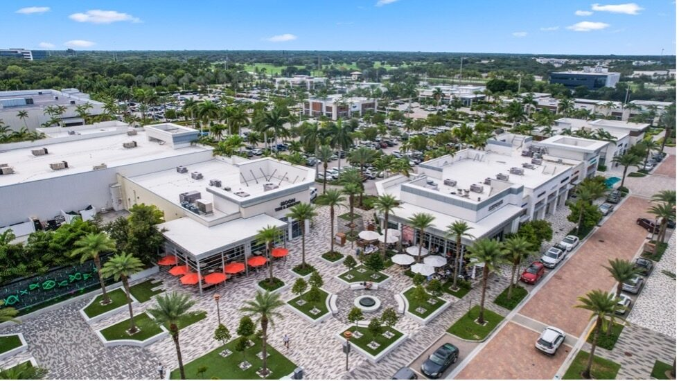
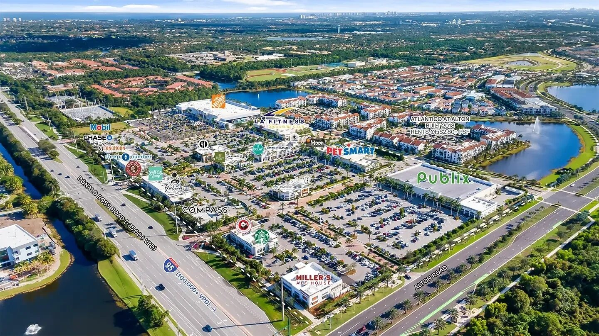

Commercial Office / Retail
Alton Town Center is one of Palm Beach County's premier mixed-use retail destinations — anchored by Publix, LA Fitness, PetSmart, Home Depot, Starbucks, and dozens of national and local tenants along Donald Ross Road in Palm Beach Gardens. Compass, the NYSE-listed real estate brokerage, chose Alton for their Palm Beach Gardens office — and when a company at that level picks a location, the buildout has to match.
The Compass space at 5370 Donald Ross Road features a modern commercial facade — full-height storefront glazing with clean aluminum framing, wood-panel accent cladding, and the signature Compass branding above a two-story glass entrance. The glass is the first thing agents and clients see when they pull into the parking lot. It communicates exactly what Compass wants: precision, transparency, professionalism.
ACG delivered the complete storefront glazing package for the Compass office — Trulite materials throughout. The scope included the full-height entrance storefront, all perimeter glass, entrance doors, and all associated framing. Trulite is one of the largest glass fabricators in North America, and their product was the right fit for a tenant buildout at this level.
Alton Town Center sits in Palm Beach County — which means every piece of glass meets Florida's impact and wind load requirements. The storefront system had to perform structurally while maintaining the clean, minimal aesthetic that a brand like Compass demands.
Built for Sisca Construction — a South Florida general contractor with a strong retail and commercial buildout portfolio. ACG and Sisca have built together on multiple projects, including the Shoppes at Westlake Point. When Sisca calls, they know the scope will be handled: clean submittals, on-time delivery, and punch lists that close.



Retail centers, office buildouts, national tenants — ACG delivers complete commercial storefront packages across Florida. Try our Scope Engine or send your plans for a 48-hour turnaround.
Send Us Plans